How the VFX were matched
The muzzle flash and bullet tracer on the live range were rebuilt from Uncharted 4 gameplay footage one measurement at a time: colours sampled from 4K frames, sizes counted in pixels, timing counted in frames. The results come first, game beside ours; after them come the graphs, the reference frames and the numbers taken from them.
Part of Game feel tools by Max Schenk.
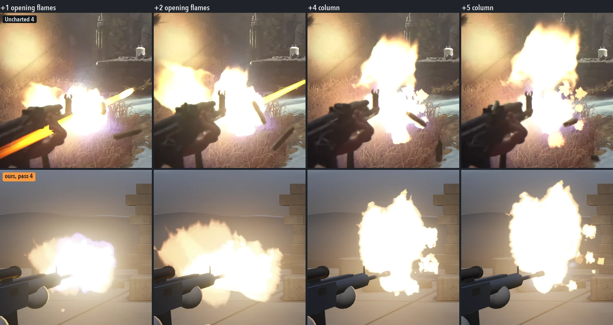
Uncharted 4's AK flash above, the rebuild below, at four moments of one shot: soft, glowing opening flames at +1 and +2, then a white column in a faint glow, tearing on its right, at +4 and +5. The rebuild is muzzle flash pass 4, the version on the live range.
Footage: Uncharted 4: A Thief's End (Naughty Dog / Sony Interactive Entertainment), from YouTube captures linked below. Frames are shown for reference and comparison.
On this page: Gun by gun Game against ours How the visuals were recreated Reference frames Timing Measuring each layer How it got better
Gun by gun: Uncharted 4 against ours
The muzzle flash ships as one base and two presets made from it, each matched to a different gun in the game. Each pair shows the game's most characteristic frame for that gun beside our live build at the same moment of the flash, cropped to the same window around the muzzle. Ours is rendered from the range's test mode, with a placeholder rifle and shooter on a test range, so judge the flash, not the gun or the scene.

Ours: U4 AK (base) preset

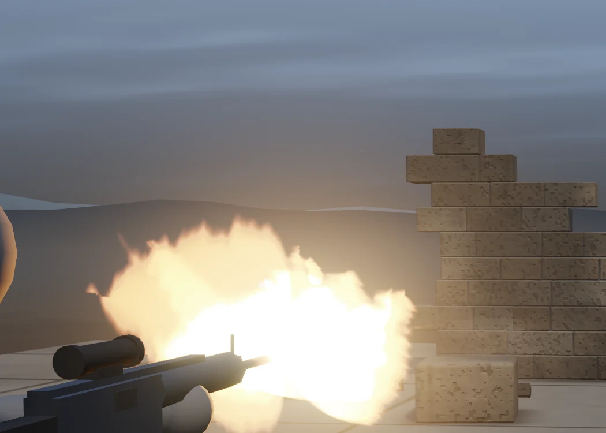
Moment 01, frame +2, about 16.5 ms into the shot. Ours: the range's hero camera, set up to put the muzzle where this frame has it, in day lighting. qqi 171.04–171.52 s
Close: two broad flame masses either side of the muzzle, a white core and a gold edge. Different: ours merges the two lobes into one wider cloud where the game keeps a dip at the sight post, and the game's warm haze above the gun is off by default in ours. The tracer is a separate effect and isn't drawn here, and the backdrop and rifle are placeholders.
Uncharted 4: rifle with a red-dot sight

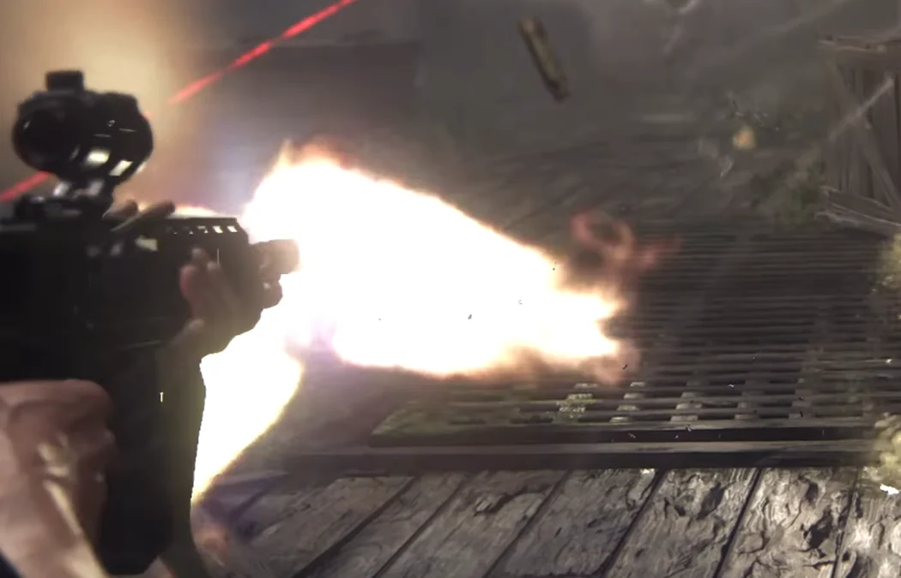
Ours: Rifle jet (02) preset

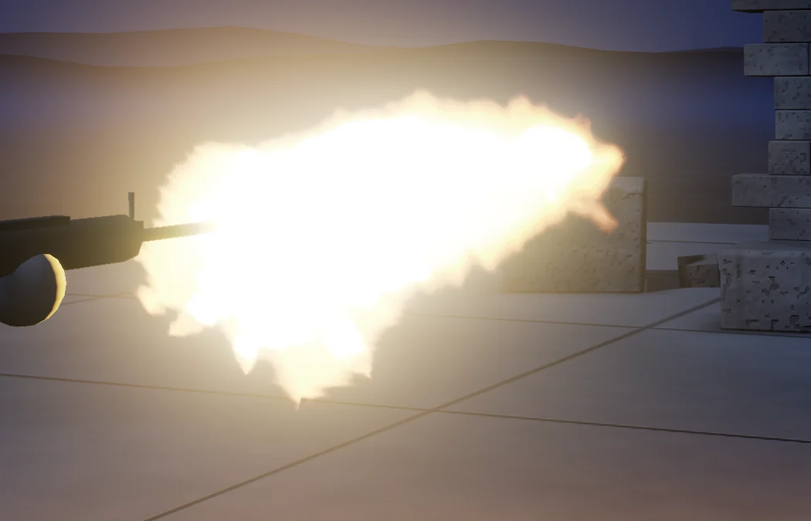
Moment 02, frame +0, about 3.3 ms into the shot. Ours: night lighting and a custom test-mode camera turned to roughly the game's angle, with the rifle pointing right; the range's fixed cameras look along the barrel and hide the jet. qqi 84.95–85.39 s
Close: a long forward jet straight off the muzzle in the very first frame, white at the root. Different: ours is wider and fills in as one broad fan, where the game's is a narrower tongue; the game's downward lobe and the orange-brown smoky ring at the jet's tip barely show in ours.
Uncharted 4: green rifle with an optic

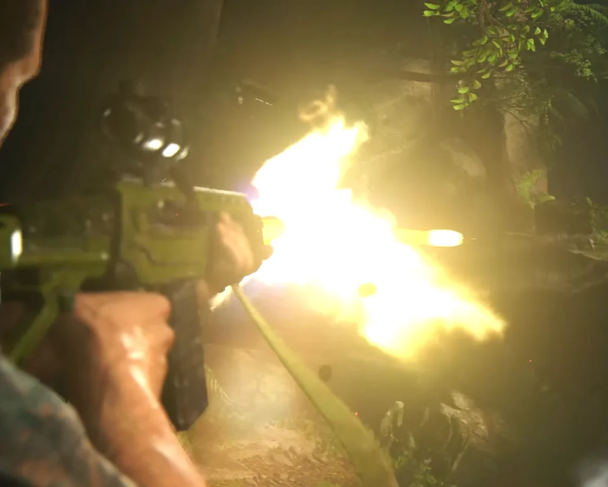
Ours: X flash (03) preset

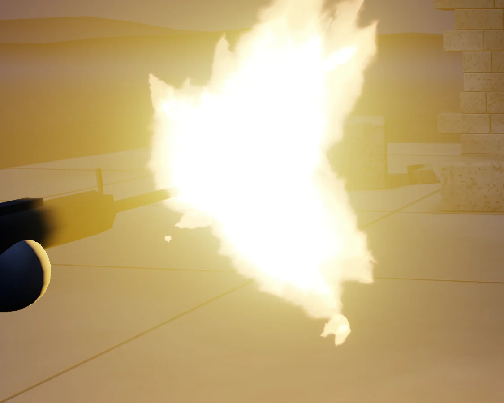
Moment 03, frame +1, about 9.9 ms into the shot. Ours: night lighting and a custom test-mode camera placed close behind the gun, like the game's. qqi 186.25–186.70 s
Close: the yellow flood over the whole scene, and a burst of lobes at the same moment. Different: from this angle our four lobes read as a tall bow-tie, straight up and down, where the game's lean forward along the barrel into an X, and ours is taller. This is the weakest of the three matches.
Game against ours
The live range runs muzzle flash pass 4 and tracer stage 2, and the comparisons here show those versions. Ours is a placeholder shooter and rifle on a test range, so judge the effect, not the scene. Moments are numbered as in The reference frames, below.
Tracer, stage 2
Stage 2 added the light that travels with each round; Max approved its look on 12 Oct. The rows run one slow-motion frame apart.
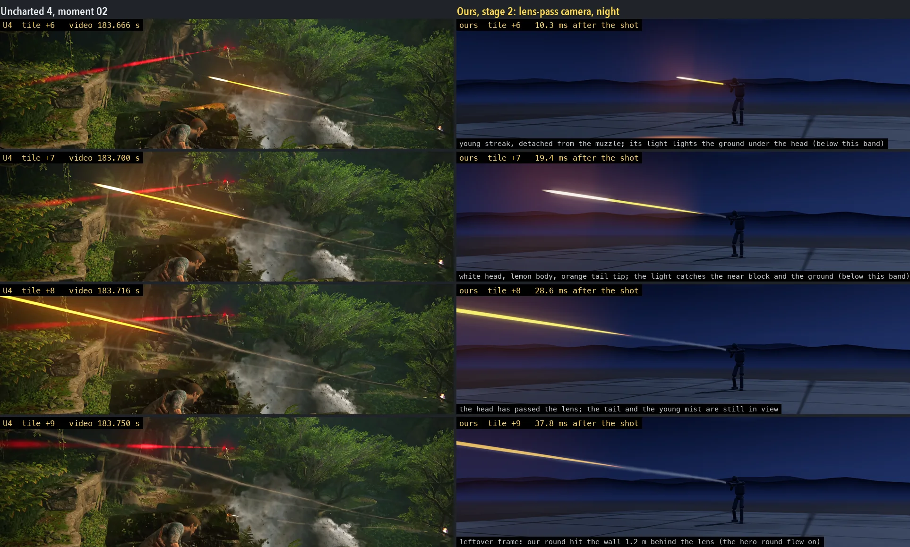
Moment 02 against ours, frames +6 to +9. The labels inside each frame come from the comparison board: a young streak detached from the muzzle; a white head, lemon body and orange tail tip; the head past the lens with the tail and young mist still in view; then the leftover frame. The board's ms labels use the older 0.55 conversion, 9.2 ms a tile; at 0.40 a tile is about 6.7 ms.
Passing cover, slowed 53×. Above, the game's light check: the rock top lights orange for about one frame as the round passes. Below, ours: one warm light rides at the head and catches the block and the ground. Click or tap to pause.
Open for Max: the timing A/B at f = 0.40, and the light's reach, where the default is 2.0 m.
Muzzle flash, pass 4
Pass 4 brought soft, glowing opening flames, a per-shot rhythm at normal speed (some shots open at full size and shrink, called burst-first; the rest open with a small puff and peak later), a column that tears into hot white pieces and a cream-peach rim. The close-ups at the top of the page are this version.
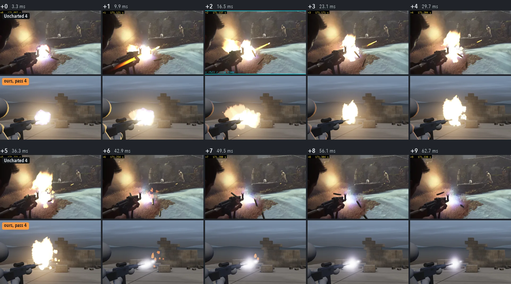
A whole AK shot, game above, pass 4 below. One tile is a tenth of the 66 ms flash: the puff at +0, the lobes at +1 and +2, the column at +3 to +5, the break-up at +6 and the violet afterglow to +9. Both cut to nothing at +10.
Close view, slowed 24×. The game's AK, pass 3 for reference, and two pass-4 shots: one opens with the puff, one at full size. Click or tap to pause.
The graph of this pass's rhythm at normal speed is in How the visuals were recreated, below.
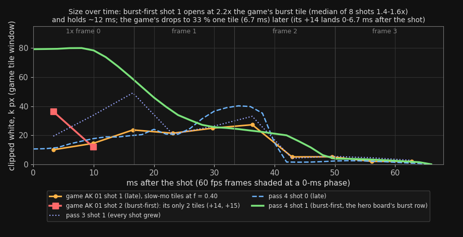
Size over time. The burst-first shot shown opens at about 2.2× the game's size and holds for about 12 ms: the next thing to tune.
What still differs
An independent critic re-measured pass 4 and called it ready with small fixes. What it, Max and a later data pass found:
- The burst-first opening is too big, too white and holds still: 0.9–2.2× the game's one burst-first frame, still at 76% of its area at 16 ms where the game keeps 33% after 6.7 ms, and it washes out the rifle.
- The column at +4 and +5 is bigger and whiter than the game's: 86% and 84% of it clipped white, against 68% and 62%.
- Fading opening flames turn into faceted, see-through sheets at 16–22 ms.
- The parts fade together. Max: “having overlapping parts fade in and out is key”; on the AK, the tall first flame grows much longer than ours.
- A data pass set 146 targets from the AK frames, and pass 4 meets 43. The game's tall flame is longer from base to tip (281, 327 and 370 px at +3 to +5, against 241, 299 and 329), and 11–16% of its flash is in the orange family at every frame from +0 to +5, where ours is 0–4%.
Later passes (5, 5b and 5c), which give each part of the flame its own timing, are built or in progress and not on the live range yet.
How the visuals were recreated
Five graphs did most of the work. Each compares one measurement of the game with the same measurement of ours. Pass 3 and pass 4 are successive builds of the muzzle flash; pass 4 is the one on the live range.
The game's real speed
The 4K capture runs in slow motion at a speed no source documents. Lining up the same pistol flash at both speeds shows the game runs at 0.40× there, so one slow-motion frame is about 6.7 ms and a rifle flash lasts about 66 ms, which is what ours uses.
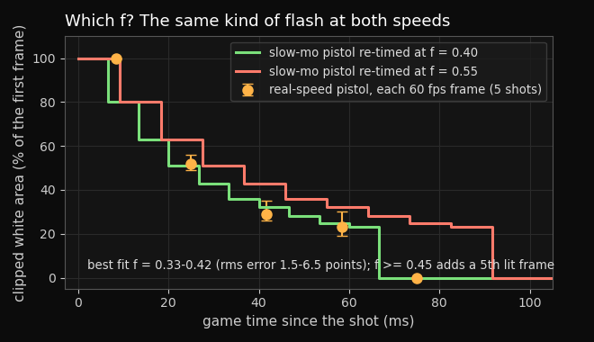
The same pistol flash at both speeds. At 0.40 the slow-motion flash, re-timed, steps through the four real-speed frames; at 0.55 it would last 92 ms and fade too slowly. The frames themselves are under Timing, below.
How long a bullet's mist lasts
The pale mist a round leaves is strongest a couple of frames after it passes, then fades steadily and is gone in about 0.7 s, so ours fades on the same curve instead of hanging in the air.
Mist strength by age. The brightness the mist adds over the background, in 8-bit levels, for the round in the mist frames under The reference frames, below. Dots are single frames; bars are spans of ages measured as one range. It rises over 2 frames, then falls roughly exponentially, with no hold and no late collapse. Dashed: the exponential fit.
A soft glow at the edge of the first flames
Measured across the edge of the opening flames, the game's brightness falls away slowly, like a glow, where our earlier pass 3 cut off sharply; pass 4 gave the opening flames a soft glow of their own and kept the column's edge crisp.
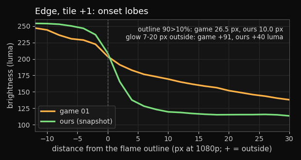
Edge of the opening flames at +1. Brightness across the flame's outline, from 10 px inside to 30 px outside, in the game (orange) and in pass 3 (green, labelled "ours (snapshot)"). The game's edge is a soft, glowing puff 26.5 px wide; pass 3 was a crisp 10 px cut-out. Pass 4 measures 21.0 px here. The +2 and +4 edges are under Measuring each layer.
The order of the flash's phases
Counting the white-hot pixels in each slow-motion frame shows the AK's flash growing to a peak at +5 and collapsing at +6; pass 3 already rose and fell in that order, though it ran bigger than the game at several frames.
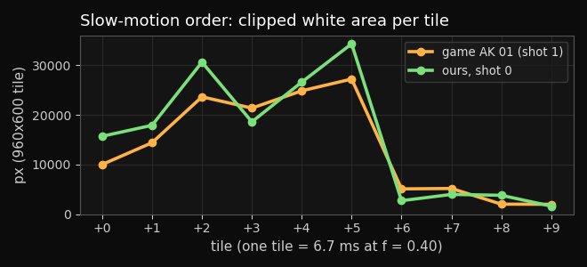
Clipped white area per slow-motion tile. The game's AK against pass 3 (green, labelled "ours, shot 0"), one tile about 6.7 ms. Pass 3 follows the order of the phases, a peak at +5 and a collapse at +6, but not the size at every tile: at +0, +2, +5 and +8 it runs 126–190% of the game.
Biggest in the first frame
At normal speed every real game shot is biggest in its very first frame, so pass 4 makes half its shots open at full size and shrink, which we call burst-first; the other half keep the AK's slower build.
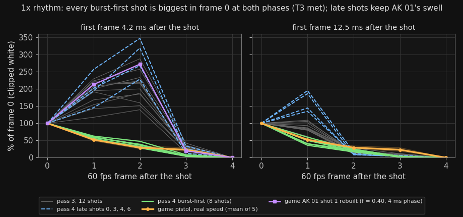
Rhythm at normal speed, pass 4. Flash size per 60 fps frame as a percentage of the first frame, at two moments a shot's first frame can land (4.2 and 12.5 ms after it). Green: pass 4's burst-first shots, falling like the game's pistol (orange). Dashed blue: its other shots, which keep the AK's slow-motion build.
The reference frames
Two public captures supplied every frame shown here. A 4K capture of the PS5 remaster, Uncharted: Legacy of Thieves Collection (qqi_N6M8bgY, no HUD) plays the game in slow motion. A 1080p capture (TDpsY0crUjE, HUD on) plays it at normal speed, 60 fps, with every frame unique. From them, 40 reference frames, crops and strips were kept, and every line in the two written specs is tagged: observed (measured in a named frame), text (from a written source) or inferred.
These are the frames that set a default or a preset. Each caption links to its moment. The 4K capture is slowed twice, by the game's Slow Motion cheat and then by the uploader's 60% playback, so watch it at speed 0.25 and step with the . and , keys.
Bullet tracer
Four slow-motion moments, plus one round at normal speed for the mist.
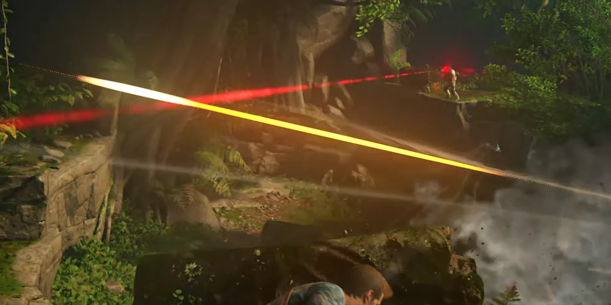
Moment 02, a round passing the lens. An enemy round over its whole 9-frame flight, ending in a pass at the lens. The red line is a sniper's laser sight, not a tracer. qqi 183.5–183.8 s
Max picked this as the most accurate reference, so every tracer default is calibrated to it: the streak's length and width at mid-distance, the head, body and tail colours, the halo, the light on nearby surfaces and the start of the smoke trail.

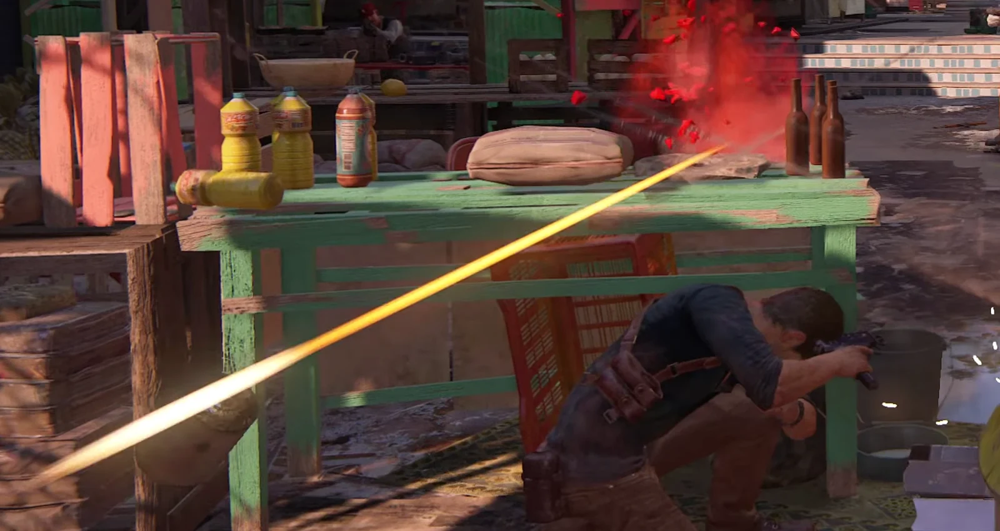
Moment 01, a near pass side-on. An enemy round crossing the market close to the camera. qqi 53.6–53.9 s
The cleanest anatomy: clipped white over the front 25–35% of the streak, a lemon-to-gold body, an orange tail tapering to a point and only a 2–6 px orange rim. Because the round passes so close, it sets the near-camera case, not the default length. Its first frame starts about 40 px ahead of the muzzle, so ours is born detached from the barrel.

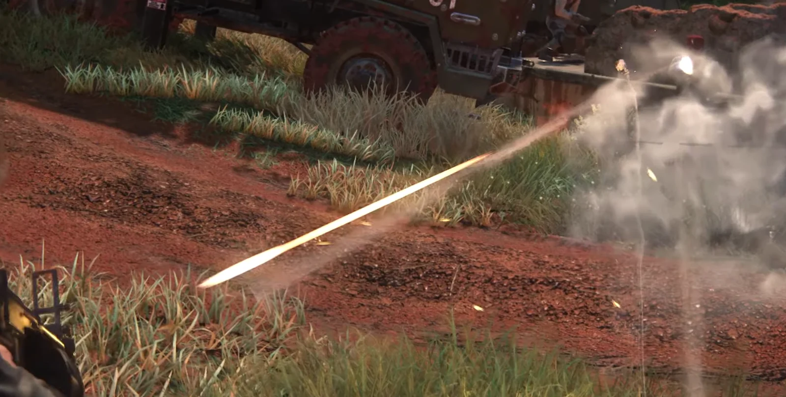
Moment 04, turret fire head-on. Every round from the truck's turret leaves a smoke trail that lingers for over a second of video. qqi 251.9–253.3 s
The research pass had assumed small arms leave no smoke. These trails proved otherwise, so the tracer got a mist layer, lit by the scene and blended over it, never glowing.
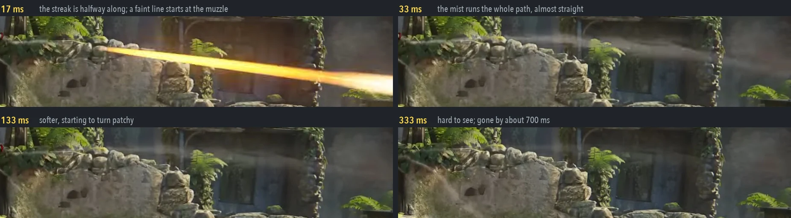
One round's mist at normal speed. The same window at four ages, 1080p and 60 fps. TDp 99.85–100.62 s
Max asked for a mist that “warps then dissipates, starting as a somewhat straight line”. Frame by frame, it is born whole along the path within 1–2 frames, almost straight, then fades in place: its strength halves about every 11–13 frames and it is gone by about 0.7 s. The build matches that and keeps warp and drift sliders.
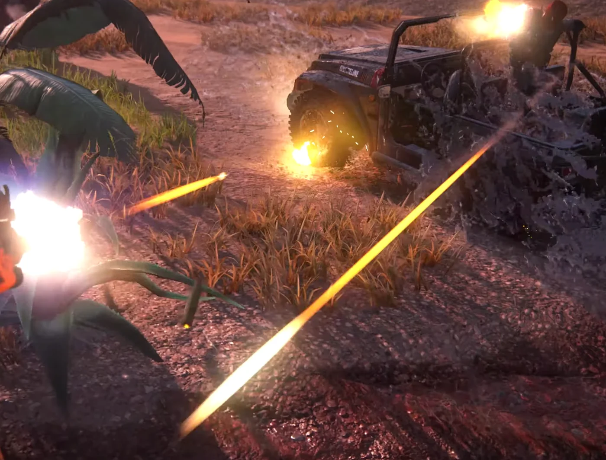
Moment 03, seen from behind. The player's round hits the jeep's wheel while an enemy round comes at the camera. qqi 217.75–218.05 s
From behind, the round looks more orange because its cooler tail is nearest the camera. There is no sign of a separate player colour, so one colour ramp serves every shooter. The round runs straight to the wheel and stops there; the impact appears on the next frame.
Muzzle flash
Four moments of the player's own fire, all over the shoulder in slow motion.
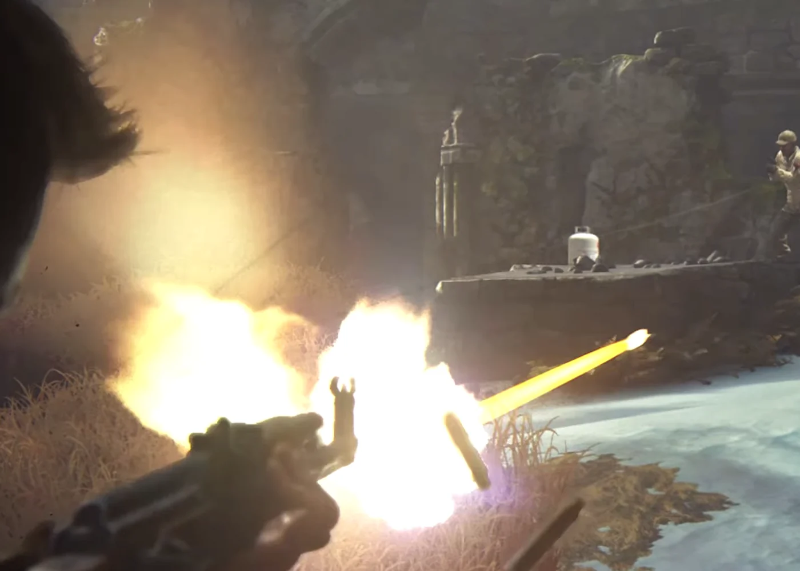
Moment 01, AK-47 in daylight. Frame +2 of the 10 the flash lasts: two flame lobes either side of the muzzle, 941 × 718 px at 4K and clipped white over 48% of that area, with the tracer leaving between them. qqi 171.04–171.52 s
The base. After seeing the strips and crops, Max said: “make the base version the ak one: the others are identically made i think, just with the base modified”. Every default is calibrated to it: the opening puff, the two lobes, the tall flame column, the orange licks, the violet afterglow, the warm haze and the hard cut. The warm haze was later switched off by default at Max's request; the flames carry their own glow instead.

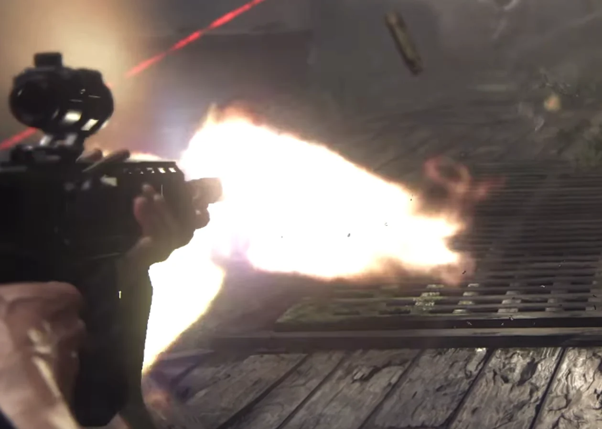
Moment 02, a forward jet. A rifle with a red-dot sight on a dark, foggy pier: a long forward jet and a downward lobe, the jet ending in an orange-brown smoky ring. qqi 84.95–85.39 s
The same effect with the base settings changed, so it ships as the Rifle jet preset made from the AK, not as a separate build.

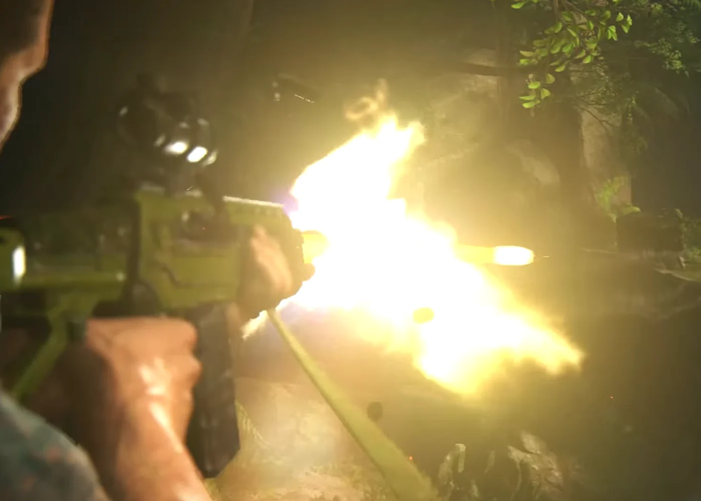
Moment 03, an X flash at night. Four lobes in an X, 758 × 651 px, with a yellow bloom that lights Drake's face, hands, the rock and the ground. qqi 186.25–186.70 s
Ships as the X flash preset. Its frames also time the muzzle light: on at +0, peak at +1, about 25–50% of the peak until +5, off at +6.

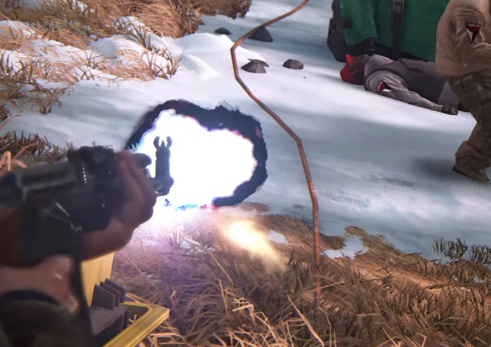
Moment 04, the same AK over snow. The first flash frame: a round puff, clipped white over 286 × 292 px, outlined by a ragged blue-black rim 20–60 px thick. qqi 66.25 s
The AK's second reference for the opening puff that some shots start with. The rim shows the flash has sooty, alpha-blended edges, not only additive light. It reads only over bright backgrounds and belongs to the secondary layers, which are not in the live build yet.
Timing: solving the slow-motion factor
The 4K capture is slowed twice. The uploader's part is easy to undo: the stream shows 3 new frames for every 5 video frames, a 60 fps capture played at 60%. The game's Slow Motion cheat is the problem. Its factor, f (game time per rendered frame), is not documented anywhere, and every normal-speed number taken from a slow-motion strip depends on it.
The answer was to find the same kind of flash at both speeds. A pistol at normal speed is lit for exactly 4 frames, shrinking to 100, 52, 29 and 23% of its first frame before it vanishes. A pistol in the slow-motion video, a different model but also a round white ball, is lit for exactly 10 frames, shrinking from 100 to 23%, then cut hard. Re-timing the slow curve fits the real one best at f = 0.33–0.42; from 0.45 up, a fifth lit frame appears, which no real shot has.
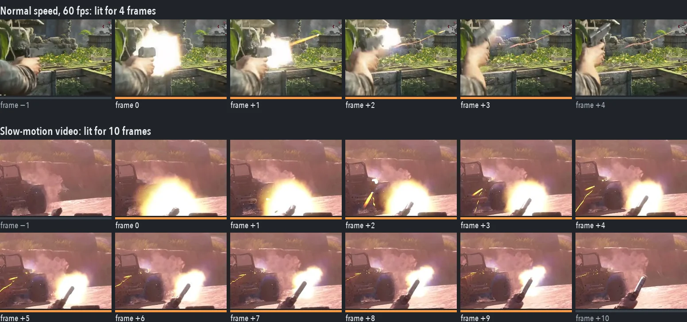
One pistol flash at both speeds. An orange bar marks a lit frame. TDp 47.55 s · qqi 77 s
The same three on one clock, slowed 24×. Real speed, slow motion at 0.40, slow motion at 0.55. Click or tap to pause.
The graph that settles it is the first one in How the visuals were recreated, above.
A second check agrees. The AK fires every 14 slow-motion frames: that is 643 rpm at f = 0.40, against about 600 for a real AK, and 468 rpm at 0.55. So one slow-motion frame is about 6.7 ms of game time, and the 10-frame rifle flash lasts 55–70 ms. The build's 66 ms sits inside that.
An earlier estimate from a falling can gave 0.52–0.66, but it rested on a guessed can size; a 5–6 cm can would agree with 0.40. The tracer was built before this result and converts with 0.55, so its slow-motion timings may run 25–35% long at normal speed. Max approved it by eye at normal speed, and an A/B at 0.40 is waiting on his pick.
Measuring each layer
Each layer was measured on its own: its sampled sRGB colour, its size and the frames it is visible in. Sizes are pixels in the 4K stream. The colours come from compressed YouTube video, so thin coloured edges are smeared and the hex values are approximate.
Tracer: five layers seen, two not
| Layer | Colour (sampled) | Size | Visible at normal speed |
|---|---|---|---|
| Core streakStraight, hottest at the front, the back tapering to a point. About 1.5 frames of travel long. | #FFFFFFhead#FFE452#FFFF7Fbody#FFEB74#FF955Ftail |
Body 12–30 px wide at mid-distance; up to 55 px on the closest passes | The whole flight, about 2–6 frames, then one dimmer, oranger frame |
| Edge fringeA thin orange rim on the core. | #DC8642 #C1714B |
2–6 px | With the core |
| HaloWarm haze around the core: strong in the dark, almost absent in daylight. | #8D4022 40 px out |
About 100–300 px on a near pass in the dark | With the core |
| Mist trailPale smoke, born whole along the path, then fading in place. Lit by the scene, not glowing. | #D8CFC0daylight and shade#F3CCB8low sun, about 40% opaque |
About 1.1× the streak's width, growing only 10–20% | Plainly for about 0.2 s; gone by about 0.7 s |
| Moving lightWarm light that travels with the round and lights nearby surfaces. | #333313→#84652Alit rock#C58E59brightest lit pixels |
Reaches surfaces about 150–250 px from the streak | About 1 frame per surface it passes |
| Heat haze, sparks | Not seen. No refraction along any path at 4K, and no sparks riding the streak: sparks belong to impacts and muzzles. | ||
Across the streak
Moment 01, 45% of the way along, in 4 px steps from edge to edge: a hard, saturated core with only a thin orange rim.
The mist's strength by age is graphed in How the visuals were recreated, above.
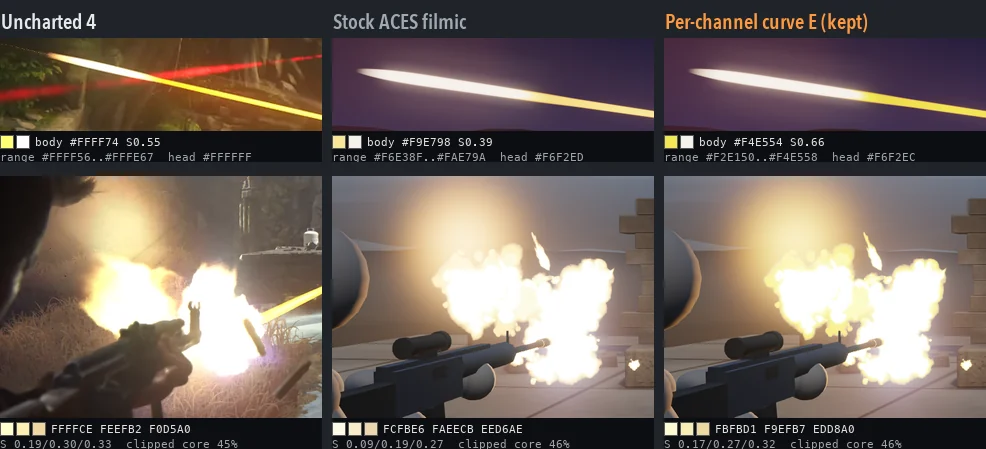
One more measurement: the colour conversion. The same build under two output curves, with the game for reference. Stock ACES filmic bleeds blue into bright yellow, so the tracer's lemon body read pale gold and the flash read cream.
A per-channel filmic curve, E, keeps the saturated golds. Max picked it on 12 Oct, and it runs on all three pages.
Muzzle flash: nine layers seen, one not
The flash breaks into nine layers, each on its own clock; a tenth, heat haze, was looked for and not seen. Frame numbers are slow-motion frames from the first flash frame, +0, to the hard cut at +10; one is about 6.7 ms of game time.
| Layer | Colour (sampled) | Size, over the shoulder | Visible |
|---|---|---|---|
| Opening flamesRagged lobes from the muzzle: a forward jet, two side lobes or an X. | #FFFFFFclipped core#FFFFD3#FFEFB2inner bands#ECCC97edge |
690–940 × 550–720 px, 25–33% of the frame's height | +0 to +1 (+2 for the AK). At normal speed, frame 0 is the largest |
| Flame columnA compact ball or an upright column at the muzzle that shrinks and warms. | #FFFFFF #FFC895 #FEC492 |
290–320 px across; the AK's column 350–465 px | +1 to +5 |
| Break-up and orange piecesThe fireball tears into ragged orange clumps; small licks drift forward and up. | #DD926D #F3A77B #E2975A #FFBC7E |
A cloud about the fireball's size; licks 40–80 px | +5 to +6 |
| Violet afterglowA soft, static lavender glow hugging the muzzle after the flame. | #BAADCF#C7B1D4body#E0DAF9#E9DCF7centre |
Core 220–270 × 230–360 px | +6 to +9, then a hard cut |
| Warm hazeA large, soft warm glow around and above the gun.Off by default: Max asked to try removing it | #373433→#AB8E68daylight#C2A65Cnight |
About 2–3× the opening flames | The flash's whole life |
| Muzzle lightLights the face, hands, gun, rock and ground; warm yellow turning orange. | #FFB347#FFBD40peak#FF8045#FF883Bafter |
Reaches surfaces several metres off | Peak at +1, 25–50% until +5, off at +6 |
| Dark rimA ragged blue-black edge round the first puff, seen only over bright backgrounds.Not in the live build yet | #2C2E3D #363B53 #5B5E84 fringe |
A 20–60 px band | +0, turning red-black at +1 and +2 |
| SmokeLit, not glowing: a white cloud over sunlit snow, invisible at night.Not in the live build yet | Near-clipped white on snow | About the fireball's size | 16 frames or more after the flame on snow |
| EmbersA few tiny orange-yellow specks, in dark scenes only.Not in the live build yet | Orange-yellow | 2–5 px each, 3–6 per shot | +1 to +2 |
| Heat haze | Not seen in any moment. | ||
The same flash at normal speed, frame by frame
Clipped white area is the mean of 5 pistol shots at 60 fps, as the first capture pass measured them; the slow-motion order of the phases is spread over the 4 lit frames. The independent review later re-measured the same 5 shots as 100, 52, 29 and 23%, the figures used in the timing proof.
| Frame | On screen | Clipped white area | Light |
|---|---|---|---|
| 0 | Opening flames or puff at full size | 100% | |
| 1 | Compact fireball or column; violet glow growing behind | 10–50% | |
| 2 | Break-up: orange pieces; violet glow at full size | 0–20% | |
| 3 | Violet glow only | off | |
| 4 | Nothing: a hard cut | off |
Edges: defined flames and soft glare
After the first normal-speed GIFs, Max saw two kinds of element in the game's flash: “the blurry ones which are like camera glare and the defined flames”. So the edges were measured too: brightness across the flame's outline, from 10 px inside to 30 px outside. The +1 graph is in How the visuals were recreated, above; +2 and +4 are here.

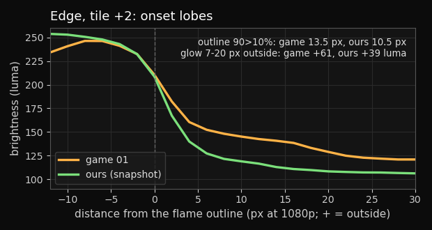

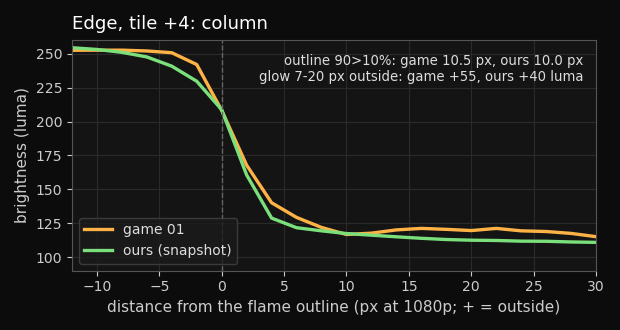
An independent review measured pass 3 (green, labelled "ours (snapshot)") against the game (orange). The opening flames were the gap: at +1 the game's edge is a soft, glowing puff 26.5 px wide, where pass 3 was a crisp 10 px cut-out; at +2, 13.5 px against 10.5. The column at +4 already matched, 10.5 px against 10.0. Pass 4 gave the opening flames their own glow and measures 21.0 px at +1 and 15.5 px at +2, with the column still crisp inside a faint, wide glow.
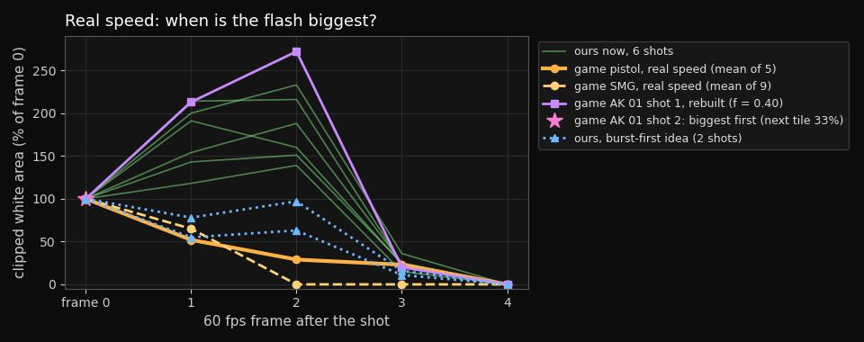
When the flash is biggest at normal speed. All 14 real-speed game shots are biggest in their first frame. Pass 3's shots swelled to 118–233% of frame 0 one or two frames later, which led to pass 4's burst-first shots. The green lines are pass 3, labelled "ours now". The slow-motion graph of the same flash, tile by tile, is in How the visuals were recreated, above.
How it got better
Each effect is one adjustable build with every layer exposed as a control. The AK flash is the base, and the other looks are presets made from it. The work ran in stages, and each stage ended with side-by-side boards against the game and GIFs at normal speed, so Max could judge how it feels, not only how it looks, before the next one started.
The builder never grades its own work: an independent critic re-measures each pass with the same tools. Every fix goes into a symptom → cause table, and layers are switched off one at a time before any one of them gets the blame. That is how too much blue-white glare at +6 and +7 turned out to be the violet afterglow, not the glare.
The muzzle flash's match score
One error summed over the flash's size, colour bands, clipped-white curve, veil, haze, shape and colour against the AK frames. Lower is closer.
- Pass 15.35
- Pass 21.57
- Pass 31.474
- Pass 3, haze off4.480
- Pass 4, haze off4.269
After pass 3 the warm haze was switched off at Max's request, and the score counts the game's haze, so from then on it was compared with the haze off. Passes 1 and 2 were scored under stock ACES and later passes under curve E; pass 2 re-scored under E is 1.655.